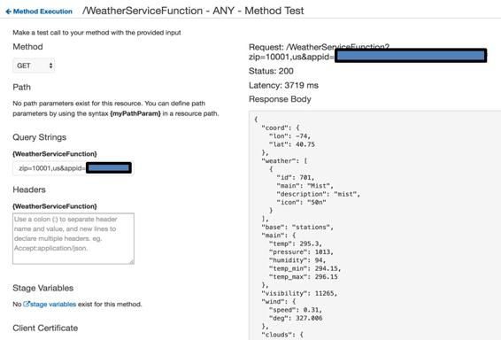

Testing the service
Now that we have all the necessary pieces set up, let's go back to the Amazon API Console and try testing the service. For that, follow these steps:
- Open the /WeatherServiceFunction/ANY file under the Resources option, and hit the Test option.
- Under the method, select Get as the option.
- For the query string, we need two inputs: the ZIP code of the city for which you want to query the current weather and the OpenWeatherMap's API key. To do this, create a query string such as zip=<<zip-value>>&appid=<<app-id>>. In this, replace the italicized values with actual inputs and form a string such as zip=10001&appid=abcdefgh9876543qwerty.
- Hit the Test button at the bottom of the screen to invoke the API and the Lambda function.
- If the test is successful, you will see a response with Status: 200, and in the response body, you will get the weather information in a JSON format, as follows:

If there's an error in test execution, check the logs in the bottom half of the screen to debug the issue.